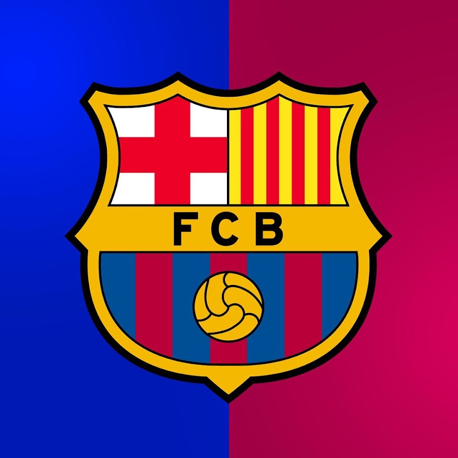

Hola soy luis

<!DOCTYPE html>
<html lang="es">
<head>
    <meta charset="UTF-8">
    <title>Ejemplo de imagen</title>
    <style>
        /* Estilos para la imagen */
        img {
            width: 300px; /* ancho de la imagen */
            height: auto; /* mantiene la proporción */
            border-radius: 10px; /* bordes redondeados */
            box-shadow: 0 4px 8px rgba(0,0,0,0.5); /* sombra suave */
            display: block; /* para centrar con margin */
            margin: 20px auto; /* margen arriba/abajo y centrado horizontal */
        }

        body {
            background-color: #f0f0f0; /* color de fondo suave */
            font-family: Arial, sans-serif;
        }
    </style>
</head>
<body>

    <!-- Imagen con alt para accesibilidad -->
    

</body>
</html>
